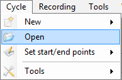
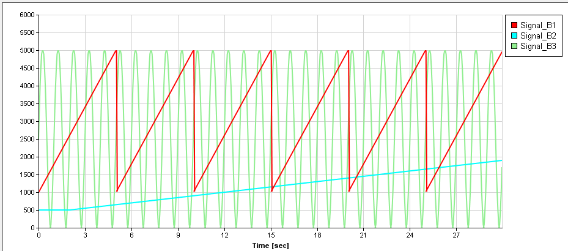
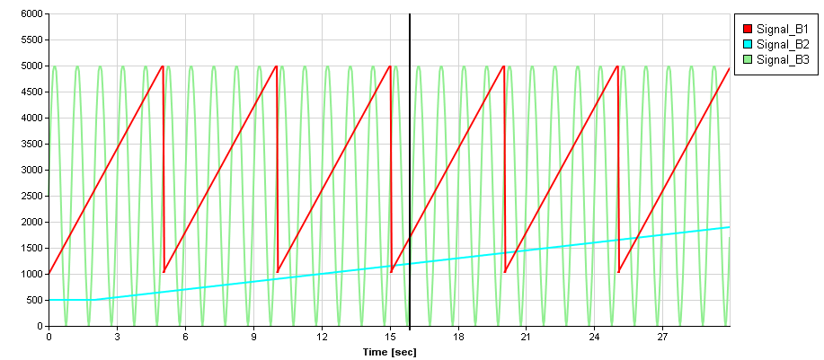

Open a cycle using the ‘Cycle\Open’ command of the menu strip.

Once loaded, cycle data are showed into the cycle graphic.

Prior to start the cycle; set the number of cycle repetitions in the ‘Count’ field. Then, click the ‘Play’ button  to start the cycle.
to start the cycle.
The cycle can be stopped at any time using the ‘stop’ button  or just held at the current position clicking the ‘Pause’ button.
or just held at the current position clicking the ‘Pause’ button.
During the cycle playing, a cursor appears in the graphic showing the current position within the cycle.

In addition of this cursor, some more information shows up in the cycle control panel while the cycle is played.
Current repetition number (starting at one)

Cycle progression bars.

Those progress bars show the progression of the cycle.
By default, all cycle data are plotted into the graphic. To hide one or more signal, right click in the graphic and uncheck signals that you don’t want to see.

Created with the Personal Edition of HelpNDoc: Easily create PDF Help documents